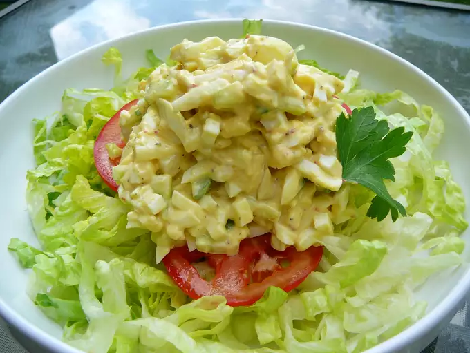

Simple Egg Salad
The simplest, good egg salad that is still delicious!

Ingredients
- 6 hard-cooked eggs
- ¼ cucumber
- 3 tablespoons ranch dressing
- 1 tablespoon mustard
- salt and ground black pepper to taste
How to Make
- Boil eggs
- Chop cooked eggs and cucumber
- Put chopped eggs and cucumber in a bowl
- Add ranch dressing, mustard salt and pepper
- Mix it all together
Voilà - now you have a bowl full of delicious egg salad. Enjoy!
Return to Home Page